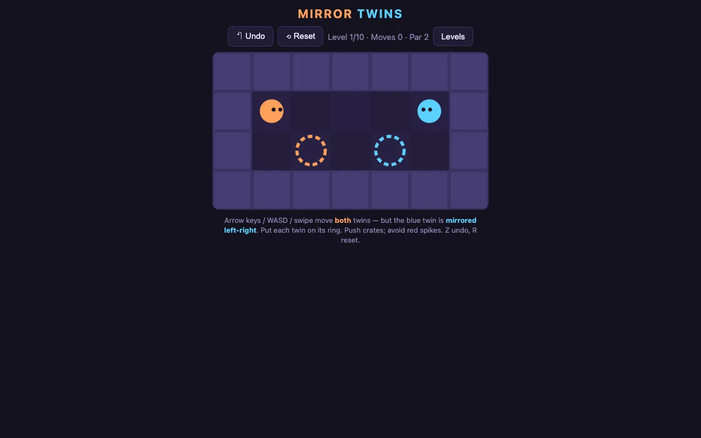
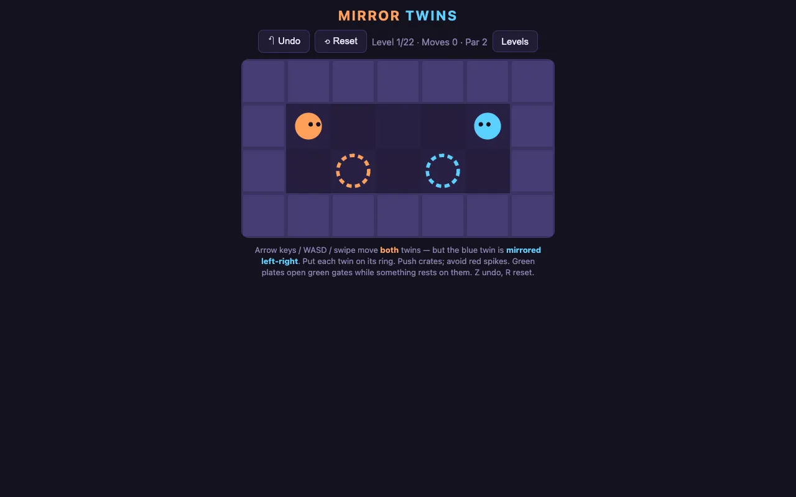
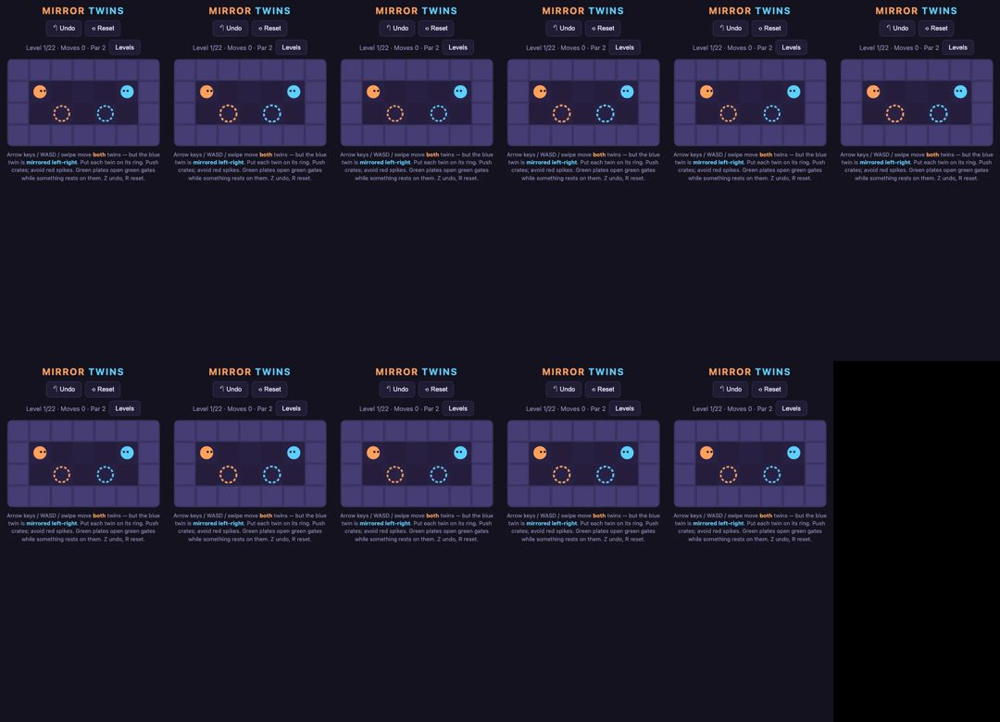
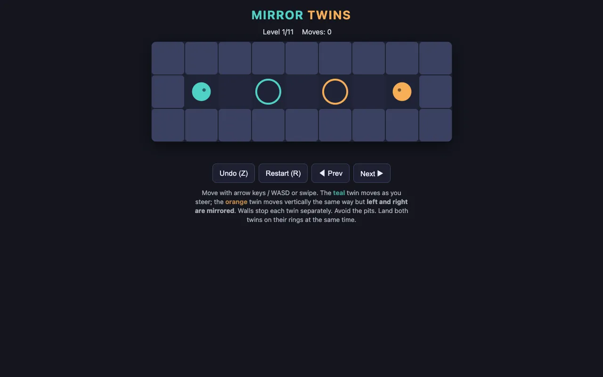
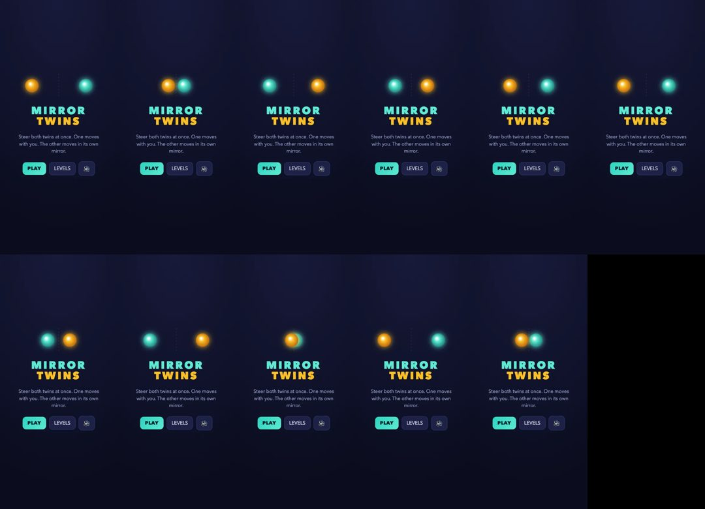

Baseline
$0.17 · 1.3 minThe prompt exactly as typed, no plugin.

desktop: still imagephone: still image100performance 85accessibility 96best practices 90seo
Open it live ↗ .plain/first/mirror-twins/index.html
game/puzzle
Both sides got exactly this prompt, then the same words to go on: “Push it further.” The baseline goes on as plain Claude; the plugin runs its method. The plugin's turn 1 is sent exactly what the baseline was sent, checked from the transcripts, so it's a second plain sample. The plugin passes only if its final beats the baseline, the plain push and its own first version.
Play it at desktop and phone sizes with mouse, touch and keyboard. No console errors; levels are solvable (solve them, or run any solver it ships). Rubric: originality of the core mechanic, how quickly a new player gets it, difficulty curve, game feel (feedback, animation, sound), and whether you want another go.
Made with the current plugin. The run recorded plugin aa6de6f with uncommitted changes; those changes were committed afterwards as they were, so the plugin files match.
The prompt exactly as typed, no plugin.

Open it live ↗ .plain/first/mirror-twins/index.html
The baseline, then “Push it further.” in the same chat, still no plugin.


Open it live ↗ mirror-twins/index.html
Turn 1 of /be-ambitious: the cheap preview, before the checkpoint.

Open it live ↗ .ambition/first/mirror-twins.html
/be-ambitious after pushing on.


Open it live ↗ mirror-twins.html
Our summary of each step from the run's own reports and the work it left after each step: what it did, what it added, what it found and what it removed.
A turn is a step of the method: turn 1 is the plain first version, turn 2 is altitude (the questions, the answers and the work on them), then depth, challenge, range, judge, stretch and lock. Each card is the work at the end of a turn that changed it, with what had been spent by then.


Full run: 10.9× the baseline's cost and 11.8× its time. The plain push: 2.6× and 21.6×. The preview alone: 1.2× and 0.9×.
You asked for: <original> Raises all of: <each part the request names, as the same kind of thing, and what excellent means for each> Genre bar: <what this kind of thing is judged on by its users and best practitioners, including qualities judged by perception, and why they'd choose it over the alternatives> Aiming at: <restated goal>, because <reason> Excellent means: <specific hard target, on every part of the ask, on the genre bar and on the goal> Proven by: <the outside check: what will be run or rendered and measured, and the comparison with the first version> Needs access to: <gaps, or "nothing new"> Mode: plan|build · answerer · reviewer
Replay the session in the terminal at the top of the page, or read the full transcript with every tool call on GitHub.
Replay the session in the terminal at the top of the page, or read the full transcript with every tool call on GitHub.